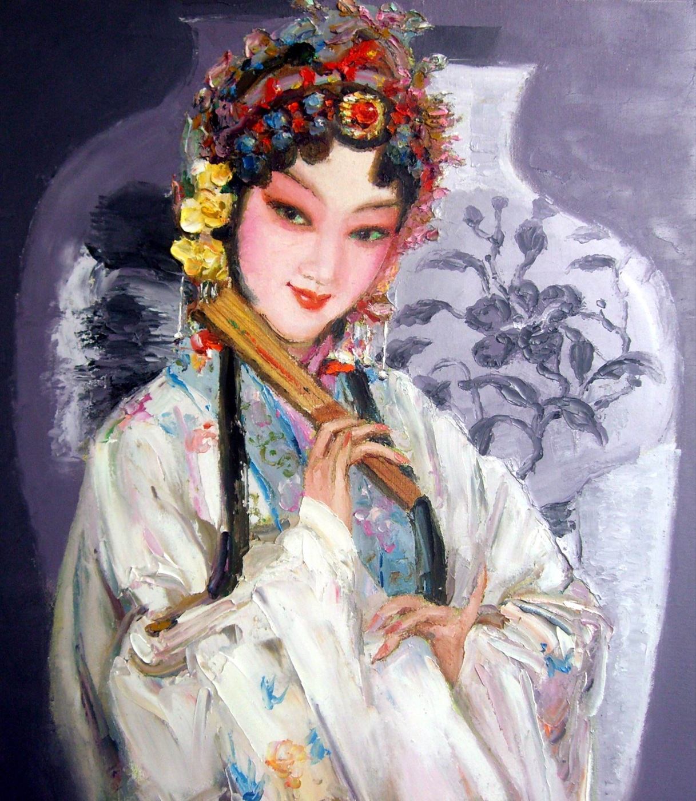
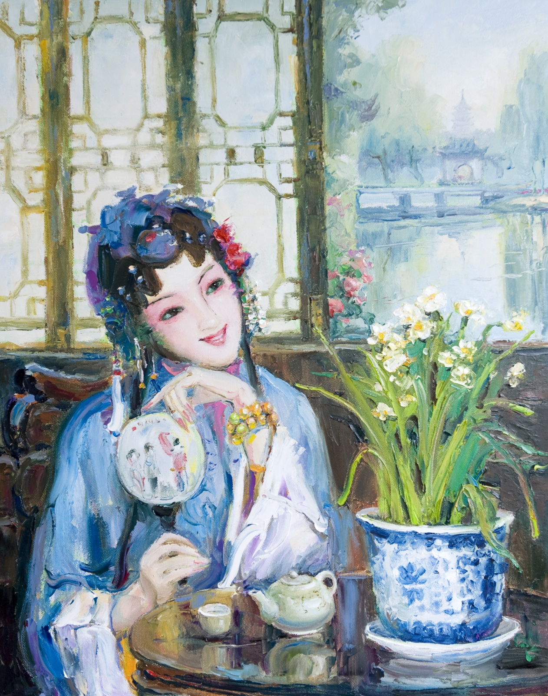

从江南生活走向戏曲人物
厉家恩，职业画家。中国美术家协会深圳分会会员，现居深圳。
画家自幼生活在江南，深受民间文艺戏曲的影响，对油画艺术有着独特的理解和审美取向。其作品致力于表达人的情感和意境，他的画追求唯美，认为艺术应当表现美的事物。
2002 年，其油画作品在瑞士日内瓦展出，受到国际友人的喜爱。近年来，他用油画这种西方的艺术形式来描绘中国传统的戏曲人物和江南古典园林，形成自己特有风格，多次举办个展。
2006 年元月，厉家恩举办昆曲人物油画作品展。著名剧作家白先勇携昆曲《牡丹亭》剧组来深时，看到他创作的昆曲人物赞不绝口，诸多报刊和电视台做了专题报道。其作品在历次拍卖中亦有较好成绩，一些画廊和港台新加坡人士均有收藏。

人物与园林
戏曲女子被放进姹紫嫣红的花园，人物姿态与江南园林共同生成画中的诗意。
画家把一个青春典雅、健康文静的戏曲女子，置身于姹紫嫣红开遍的花园，置身于牡丹亭边芍药栏前。如此优雅的环境之中，平添了几分诗意。
他通过对人物动作神态的细致刻画，来表达画中女子那矜持的含羞状态和大家闺秀温情脉脉甚至有点微妙的情感波澜。一个个青春女子或坐或倚，悠然自得，大方得体，表现出江南女子特有的清纯与青春、深婉与清丽。
甜美的形象、华丽的色彩、飘逸的线条，与充满诗意的古典园林彼此辉映，交织呈现乃至完美融合，烘托出梦境的迷幻和情感的浓烈。

整体写实，局部抽象
衣纹与头饰不被细致复制，而是在刀痕和肌理中被重新组织。
画面整体看是写实的，但局部处理上，画家并未细致具体地描绘人物的衣纹、图案和头饰等细节，而是把它抽象化，突出表现性。
他把握戏曲情景中的精神，浓彩淡墨，以极其鲜明的色彩和随意挥洒的笔触，来表现画中人的声音容貌。为加强画面力度，画家放弃画笔，全部改用油画刀作画。
画面中，刀势的运作和肌理的构成甚至脱离客观的真实，而任凭主观的喜爱和想象。二维和三维空间各自独立又互相转换，而整体气氛十分融洽，形成鲜明的个人风格。
粗犷的风景背景与人物面部，都由油画刀刻画。

油彩与国画理念
材料是西方的，精神与笔意却来自中国传统文化。
西方油画往往注重客观的真实性，而中国国画则强调精神，强调意境及色彩线条等表现技法上的主观性。画家把两者融合起来，使用的虽是油画材料工具，表现的却是中国传统文化精神。
画面中，中国民间艺术元素得到充分发挥，大胆使用原色，追求明快艳丽；用笔上追求洒脱随意，不拖泥带水。
即使是油画，用笔仍见飞白，似有水墨的韵味，深具中国油画的特色。
《水仙》｜布面油画｜76 × 61 cm

他的画法
他使用的是油画材料与油画刀，表现的却是中国传统文化精神。飞白与水墨的韵味，留在了油彩之中。
其余两幅作品
网页中的七幅作品图像均由家人提供。点击画面可打开大图细看。